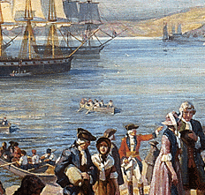
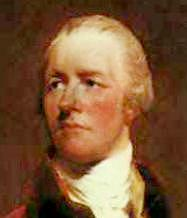
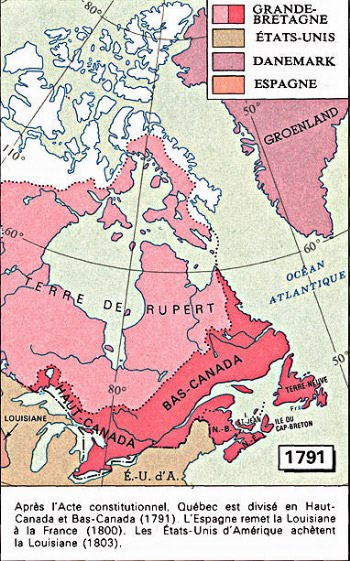
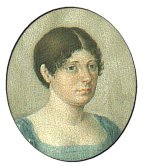
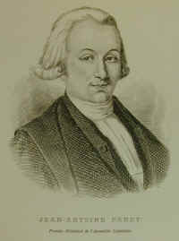
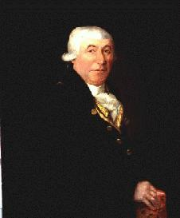

|
The Conquest was the first revolution the Canadiens lived through; their lives were turned upside down, often to their advantage. A generation went by, and then came a second revolution, that of 1791. After the American War of Independence, it was the echoes of the French Revolution of 1789 that rang out here. The British colonial authorities welcomed a revolution that came a century after the one England had known in 1688. Backed by the Catholic Church and Mgr Plessis, the British position changed with the Terror of 1793 : the beheading of Louis XVI stirred up a powerful counter-revolutionary current in the colony. American independence and the French Revolution prompted London, in 1791, to grant its colony a Constitution in which monarchical and aristocratic power, embodied by the Governor and the Executive and Legislative Councils, was tempered by democratic representation.  By 1791 London had had enough of the complaints of the Loyalists, who were playing the martyr. True, the Americans had driven them out shamefully. But so far the Loyalists' loyalty had cost the British Treasury more than 15,000,000 pounds. "They have been supplied with seed, livestock and farm implements, a Government report in London points out. Every head of a family was granted 100 acres, plus 50 acres for each member of his family, etc... And they are still complaining, the author of the report concludes. There are at most 7,000 of them being more English than the English in the territory of Quebec, he scoffs, clearly exasperated with the Loyalists, and now they would like their concessions, from Pointe Beaudet westward, to form a district separate from the Province of Quebec."  THE CONSTITUTIONAL ACT, THE
CANADIENS'  In 1791 the Lower Canadian part was given
a new grid laid over the seigneuries and the
concessions held in free and common socage: the counties. Parliamentary life, the growth of printing and the appearance of newspapers such as the Gazette de Québec, the Quebec Mercury and the Canadien encouraged the birth of public opinion and sparked debate. Joseph Quesnel captured the era by staging l'Anglomanie in 1807. Louis Dulongpré poked fun at it in caricatures. Parliamentary
democracy went hand in hand with the rise of a French-speaking
middle class in the liberal professions, which,
through professional or political ties or family
alliances, developed new forms of social life. 
Colleges multiplied. The fur trade, the foundation of
the economy for two centuries, gave way to the timber industry, which
ended the essential role of Native people in large-scale
commerce.
FIRST ELECTIONS, FIRST DEBATES Passed by the Commons, accepted without much discussion by the House of Lords and given royal assent by the King, the Constitutional Act came into force on December 26. In Montréal the event went unnoticed: bread was too expensive to hold a banquet. In Québec City it was the occasion for memorable celebrations, with many toasts raised, from the King to the Duke of Kent, by way of the French Revolution and liberty, money and health. Long live the New Constitution....  Once elected, on June 20, Panet proved a master of publicity. After thanking his voters, he announced that he intended to hand out 100 gold louis to the poor. And he kept his word. While his colleagues were still congratulating themselves on being elected, Panet was already investing in his next election campaign. Of the 50 members elected, 16 were English-speaking. Of the 6 members allotted to the city and county of Montréal, 4 were English, Joseph Frobisher, James McGill (who had married a French Canadian), John Richardson and James Walker, and 2 were Canadiens, Jean-Baptiste Durocher and Joseph Papineau. Frobisher, McGill, Richardson and Durocher were the Beaver Club, the fur lobby. Walker had been one of the defenders of Fort Saint-Jean in 1775 during the American invasion, and Joseph Papineau was a notaire and surveyor; it was he who had drawn up the cadastre of most of the concessions around Montréal. For those worried that 4 Englishmen were representing a Canadien majority, the Gazette de Montréal offered reassurance, stating in an article that "these Gentlemen will not take into account the ill-founded distinction between English and French made by certain prejudiced persons, but will be guided only by patriotic motives, for the service of the public good and the benefit of the country." 
After 1793, Lower Canada settled comfortably into parliamentary and partisan quarrels. Everything quickly became a subject of controversy between the French and the British Party. First came the question of the tax and finance laws of 1793 and 1795, which provided for taxing commercial enterprises but not landed property; then came the attempt by J. Mountain, Anglican bishop of Québec, to set up a network of free schools to anglicize and convert the Canadiens as quickly as possible. In 1805 the conflict broke out again, this time over the funding of prisons. On one side were the Canadiens, hostile to a property tax, who suggested taxing commercial activity instead, which they considered a luxury of parasites. On the other was the British Party, which argued that the immense landholdings of the Canadien seigneurs contributed nothing to the general well-being of the colony and should therefore be taxed accordingly. By giving Upper Canada a distinct identity and a provincial constitution, and by encouraging British settlement there, England took the first step on the road that would finally lead to Canadian Confederation. Even so, many historians consider that the fact that this act did not establish responsible government, and that it divided financial powers in a way that favoured the unelected councils, contributed to the political conflicts of the early 19th century. 
|


 For the record,
Joseph Papineau pointed out that, since there were objections
to Mr. Grant's election, this was an
obstacle to choosing him as Speaker. The question was then put
to a vote: Panet was named Speaker by 28 votes to 18, that is,
all the English members present, joined by 3
Canadiens. In short, even before the official opening of the
first parliamentary session of Lower Canada had taken place, the die
was already cast
For the record,
Joseph Papineau pointed out that, since there were objections
to Mr. Grant's election, this was an
obstacle to choosing him as Speaker. The question was then put
to a vote: Panet was named Speaker by 28 votes to 18, that is,
all the English members present, joined by 3
Canadiens. In short, even before the official opening of the
first parliamentary session of Lower Canada had taken place, the die
was already cast